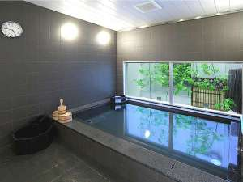
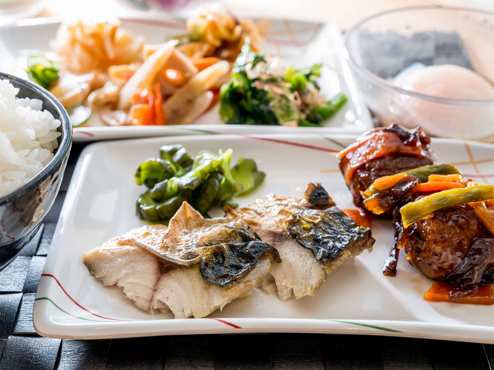
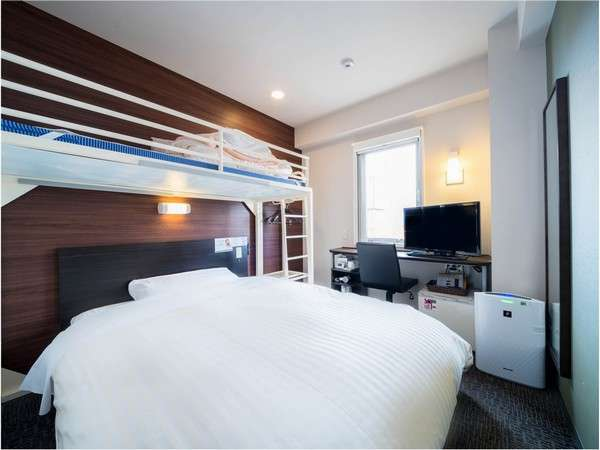
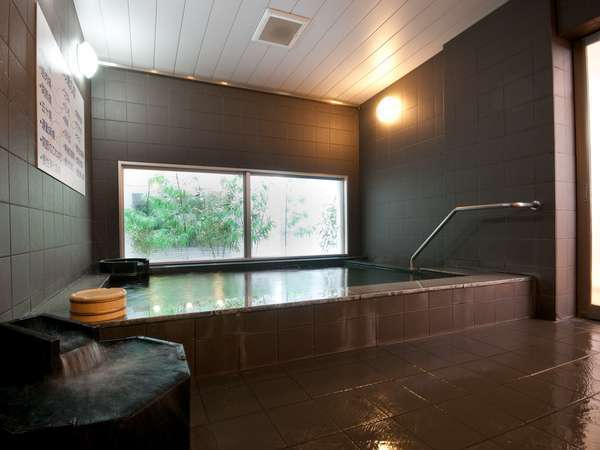

中津徒歩3分☆駐車場＆ビュッフェ無料♪天然温泉あり
エリア：大分県＞ 中津・耶馬渓・宇佐

  
【スーパーホテル大分・中津駅前 天然温泉 扇城の湯】
JR日豊本線「中津」駅南口より徒歩3分♪平面駐車場も無料(先着順52台)♪博多や小倉へのご移動にも便利です。 朝食ビュッフェ無料＆天然温泉「扇城の湯」を完備。当館でごゆっくりお過ごしください☆
【アクセス】
JR日豊本線 中津駅下車 南口より徒歩3分 最寄りコンビニ中津駅前構内ファミリーマートさん
最安料金(税込み)
5,700～
(2,800円～/人)